Budovy v priemyselnom areáli NA PREDAJ
Strážske
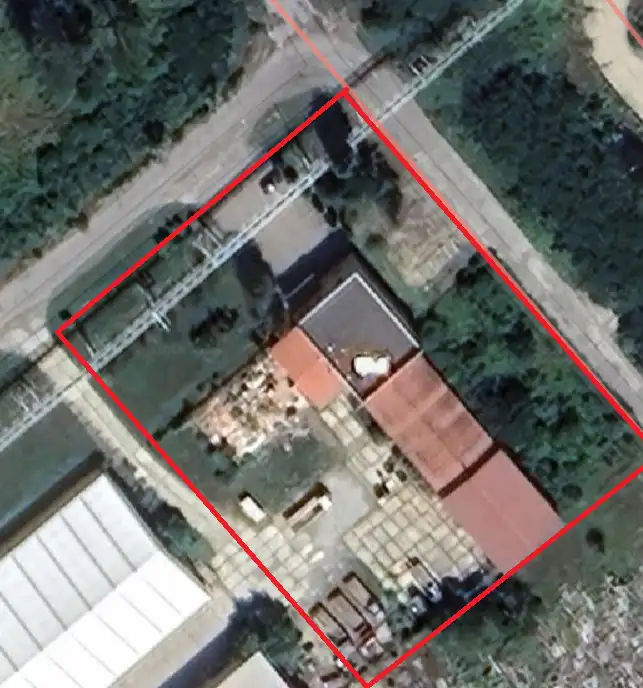
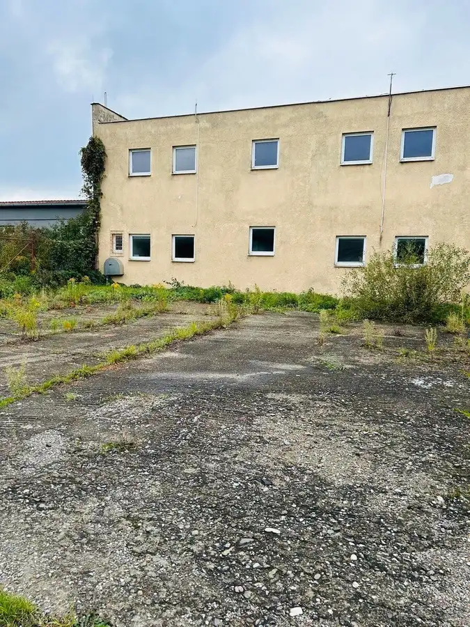
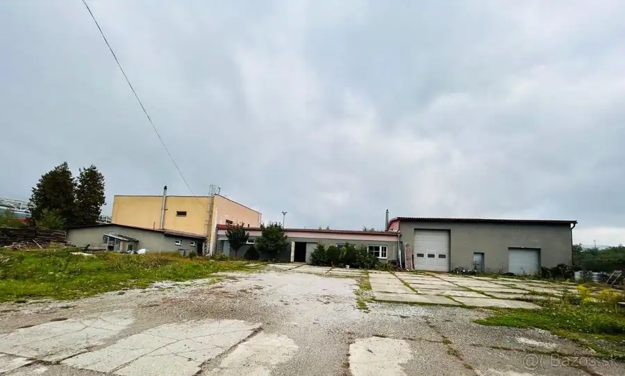
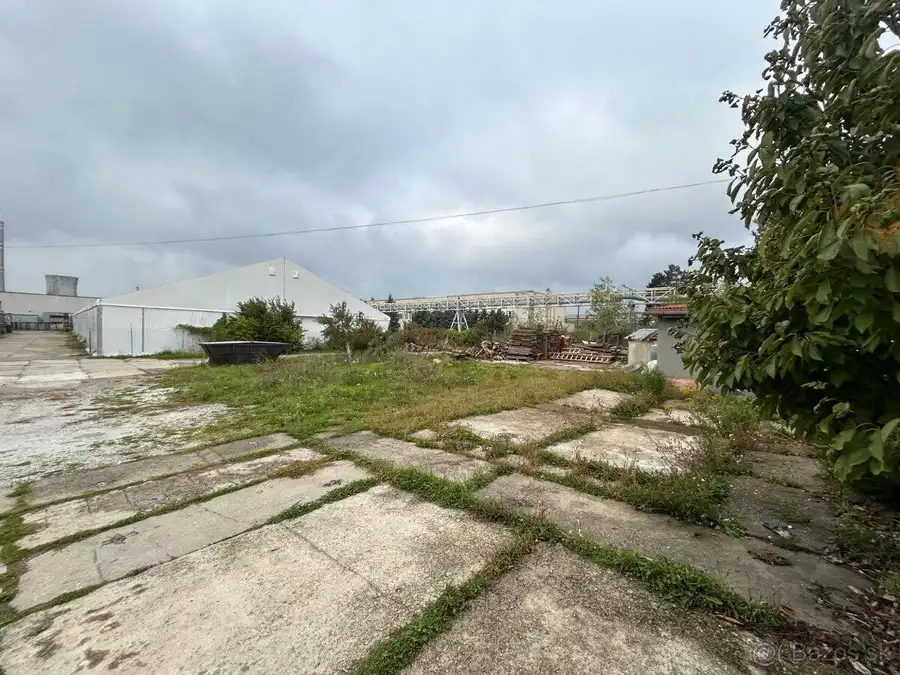
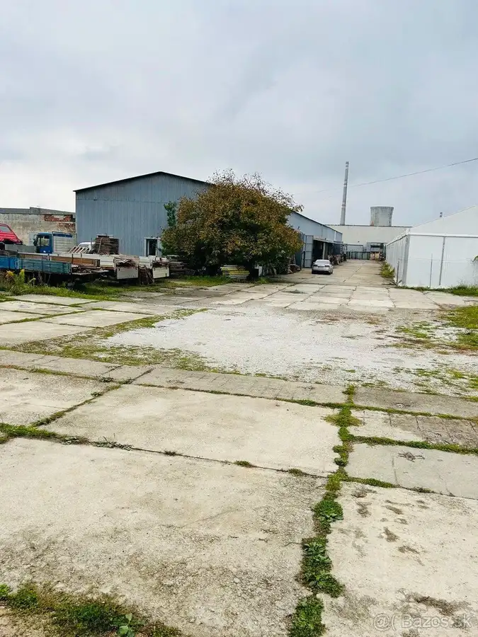
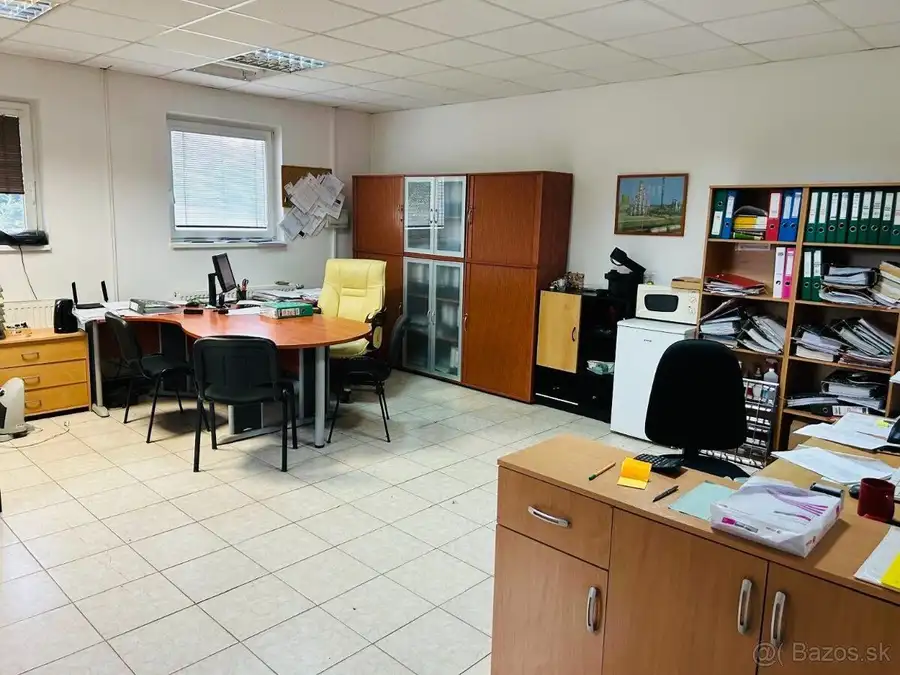
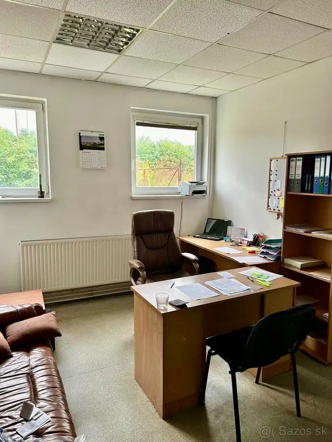
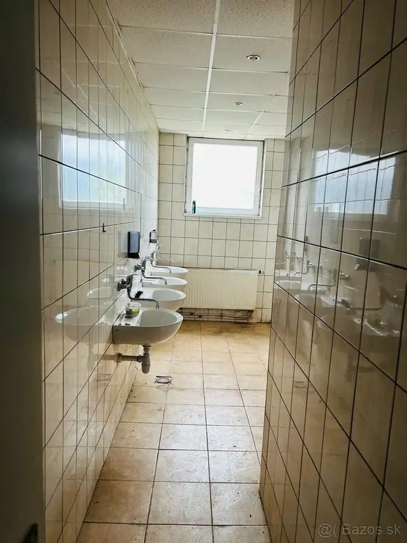
- Plocha850 m²
- StavČiastočná rekonštrukcia
O nehnuteľnosti
Ponúkame na predaj priemyselný areál o výmere 4300m2, nachádzajúci sa na ulici Priemyselná 720, 072 22 Strážske ,okres Michalovce, Slovenská republika, na východnom okraji areálu bývalého Chemka a.s. a terajšieho ENERGOCHEMICA TRADING a. s. , v susedstve sa nachádzajú spoločnosti : Fiberstruct S.r.o., 1. Deliace Centrum, s.r.o..Mesto Strážske má strategickú polohu nachádza sa na hlavnom ťahu Vranov nad Topľou - Michalovce – Humenné.Objekty v areáli sú ideálne pre spoločnosti, ktoré hľadajú kombináciu halových, administratívnych a vonkajších skladovacích plôch.Inžinierske siete: voda, kanalizácia, NN a zemný plyn.Prístup je po asfaltovej vnútro areálovej komunikácií.Areál ponúka: 2 budovy, spevnené plochy, parkovanie.Budovy:1.Budova soc. zariadenia s prístavbami :Jedná sa o dvojpodlažný objekt bez suterénu o výmere 728m2 vrátane dvoch prístavieb, využívaný ako administratívne priestory.Dispozične je riešená na priestor kancelárie, šatne, sprchy, kuchynka, WC, sklady.Nosná konštrukciu tvorí tyčový betónový skelet, obvodové murivo je murované z tvárnic hrúbky 40cm,stropy tvoria betónové stropné a strešné panely. Stavba má izoláciu proti zemnej vlhkosti.Užívaná od roku 1978, čiastočná rekonštrukcia v roku 2008 v rozsahu: nové rozvody ZTI,ELI, nové kombinované vykurovanie plynom a tuhým palivom, rozvod studenej a teplej vody z PVC materiálu, nové keramické dlažby a obklady, znížene stropy, nové vstupné plastové dvere s izolačným dvojsklom a plastové okná.Prístavby: sklad, klampiarska dielňa, kotolňa.2.Sklad:Sklad je prepojený s budovou soc. zariadenia cez zámočnícku dielňu.Stavba je užívaná od roku 2014.Jedná sa o jednopodlažný objekt bez suterénu o výmere 173m2. Má murované nosné steny, krov je drevený priemyselný stanový, strešná krytina plechová, betónová podlaha v dielni sa nachádza montážna jama.Cena:380.000,-EUR bez DPH, 456.000,-EUR s DPHBližšie informácie a obhliadky:Bc.Ľuboš Zambor0908 710 988lubos.zambor@zgroup.sk
Parametre
- Druh
- Iný objekt
- Dátum zverejnenia
- 03. 03. 2026
- Elektrina
- Na pozemku - 230 V, Na pozemku - 400 V
- Energetický certifikát budovy
- nie je
- Odpadové vody
- Na pozemku - Kanalizácia
- Plocha pozemku
- 4300 m²
- Plyn
- Na pozemku
- Počet nadzemných podlaží
- 2
- Prístupová komunikácia
- Asfaltová
- Rok výstavby
- 1978
- Stav nehnuteľnosti
- Čiastočná rekonštrukcia
- Typ
- Predaj
- Typ konštrukcie
- Skeletová, Železobetónová
- Voda
- Na pozemku - Diaľkový vodovod
- Vybavenie
- Vonkajšie parkovacie miesto
- Zastavaná plocha
- 901 m²
- Úžitková plocha
- 850 m²
Kde to je


Mohlo by Vás zaujímať
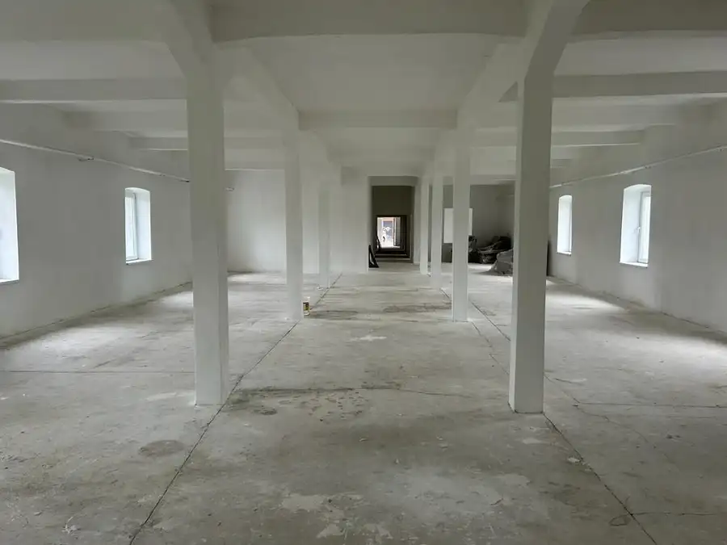
Komerčné priestoryNové Cena na vyžádáníPrenájom: SKLAD 549 m2 Strážske Strážske 549 m²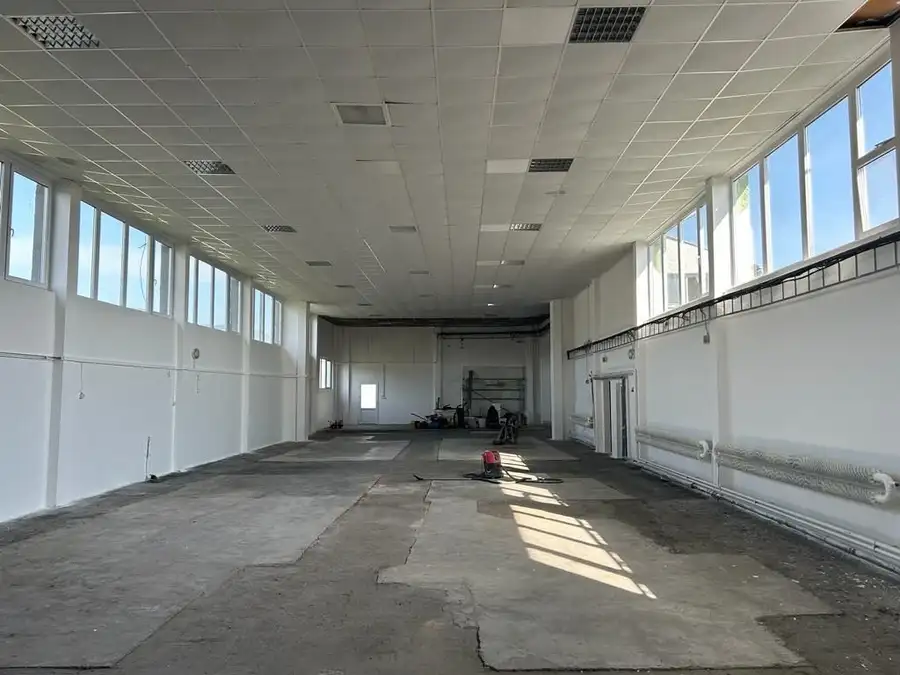
Komerčné priestoryNové Cena na vyžádáníHALA cca 500 m2 v priemyselnom areály na prenájom Strážske 340 m²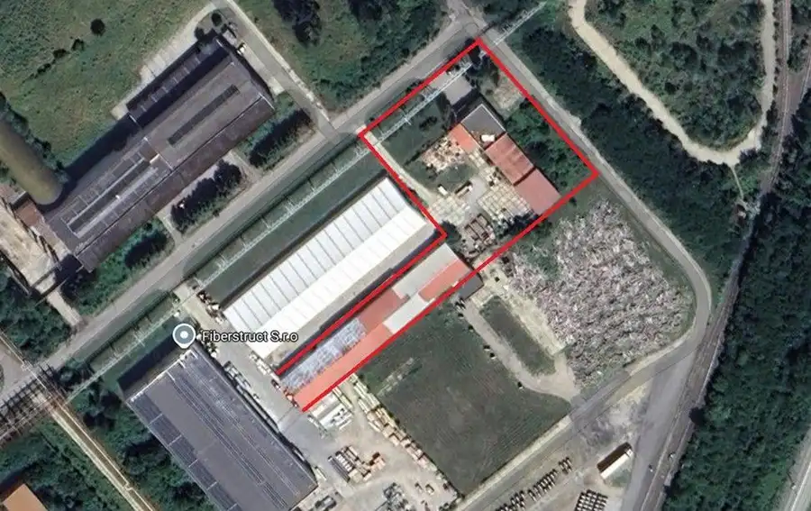
Komerčné priestoryNové 840 000 €Budovy v priemyselnom areáli NA PREDAJ Strážske 2200 m²